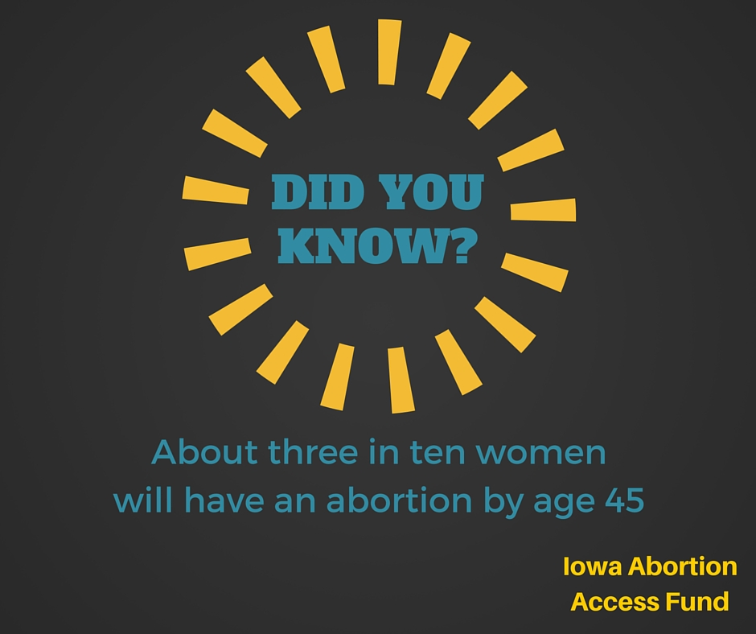

Iowa Abortion
Access Fund


According to the Guttmacher Institute "Abortion is a common experience. At current rates, about one in three American women will have had an abortion by the time she reaches age 45."
Every year, IAAF provides loans to hundreds of Iowa women who have made the difficult decision to have an abortion. They represent all racial, ethnic, and religious backgrounds. Some are married, some are single. Their ages range from 11 to 45.
Their situations are desperate.
Home · About IAAF · Contact Us · Donate · Mailing List · Events ·